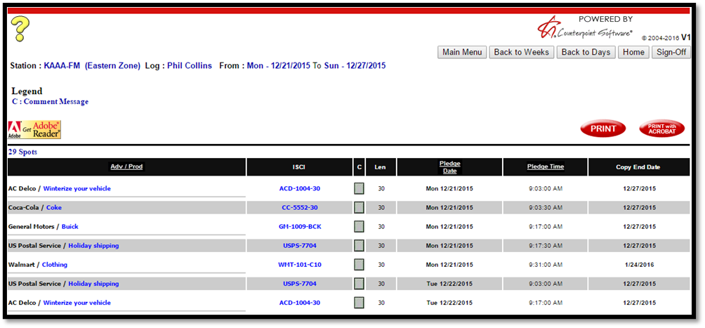
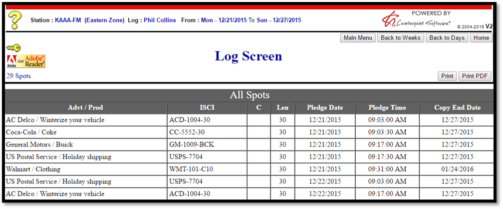
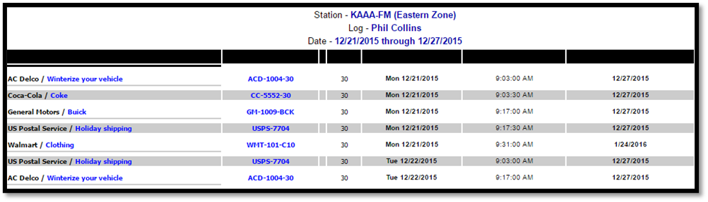
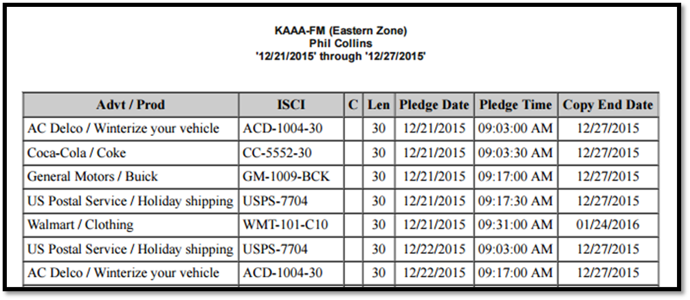
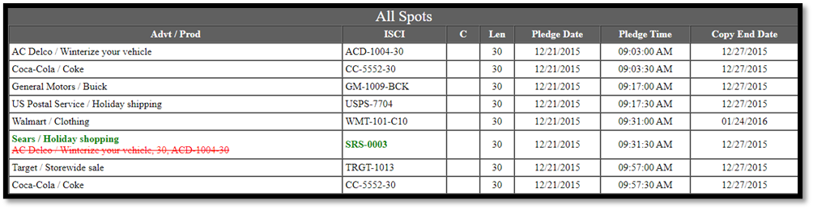
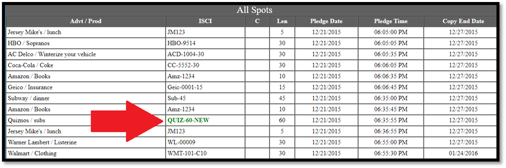
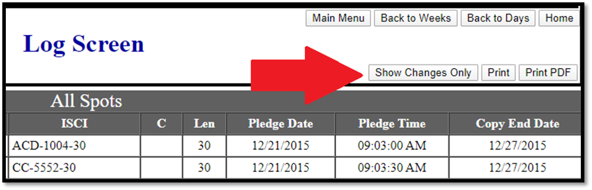

Viewing and Printing Logs
Logs can be viewed or printed from the Main Menu page by clicking the “Logs & Audio button”, then selecting a week or day from the list of available logs.
Viewing Logs
The look of the Log screen has changed, although the information shown in the same.
Version 1 Log Screen:

Version 2 Log Screen:

The vehicle name is shown near the top of the screen, along with the date range being viewed. The spot information is shown in the second part of the screen, with the following information appearing for each spot:
- Advertiser and Product: The name of the advertiser and the product.
- ISCI code: The unique identification code for the copy.
- Comment: If a copy instruction comment is available, a blue “speech bubble” icon will appear in the “C” column. Click the icon to see the comment. (This comment will also appear on the printed log when printed and on the affidavit.)
- Length: The length (in seconds) of the spot.
- Pledge Date: The date the spot is pledged to air.
- Pledge Time: The time that the spot is pledged to air.
- Copy End Date: The last day that the copy is valid to air (using the latest rotation end date).
Depending on configuration settings for the vehicle, the avail name, feed dates and times, and cart numbers can also be shown.
Printing Logs
Logs can be printed by pressing the “Print” button or saved to PDF by pressing the “Print PDF” button.
The look of the printed log has been changed.
Version 1 printed log:

Version 2 printed log:

Color Coded Changes
On some configurations, when changes are made to a previously exported log, which is then re-exported, the changes will be indicated using green and red color coding.
Added spots will appear in green (the advertiser, product, and ISCI code will use a green font). This is shown in the picture below, where a Sears spot was added on the pledge date of 12/21/15 with a pledge time of 9:31:30am.

Removed spots will appear in red with a strikethrough (removed spots appear in the last position of the break, under the last spot, or in the case of an ROS agreement where the pledge times are all the same, under the last spot of the day). In the picture above, the AC Delco spot in red with a strikethrough has been removed, replaced by the new Sears spot.
When copy is changed, the new ISCI code will be shown in green, as seen in the picture below, where the red arrow is pointing to a green ISCI code (the red arrow will not appear on the web log. The red arrow has been added to the picture to make the changed ISCI code easier to see).

This color coding only appears on the Logs/Audio page and the printed log and PDF log, not on the web Affidavit page. Spots that have been removed will not count toward spot totals shown on the Spot Summary grid, and will not be shown on the web Affidavit page. With this feature, spots that have been moved within the same break when compared to a previous export will be shown in black, like any other spot. If a spot was on the first web log, and was moved to a different break or a different day, then re-exported, it will appear as removed from the original break, and added to the new break.
When viewing a re-exported log with changes, by default, a button is shown in the upper right corner that is labeled “Show Changes Only”.

When “Show Changes Only” is pressed, the spots will be filtered so that only added and removed spots and spots with changed copy will be shown. If the web log is printed at this time, only the changes are shown on the printed log. After “Show Changes Only” has been pressed, the button changes to a “Show All Spots” label. Press it to change back to the view that shows all spots.
If there are no changes to show, the button label will be “No Changes” and the button itself will be grayed out, as shown in the picture below.

If there are spot changes as a result of using the “Unpost and/or Delete Spot utility” to clear spots, or because an agreement was terminated, removing the spots, and then re-exported, because the spots from the original export were cleared, there is nothing to compare the new spots to, therefore in cases like this, the color coding will not be shown.